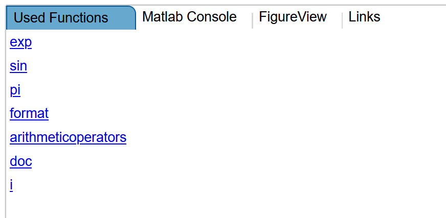

Anatomy of an Example.m-file¶
In order to be able to create our own Examples, it is important to understand the underlying files necessary for a working Example. Along with the solution-code provided as a matlab-script and the problem description in Markdown, the Example.m file is the most important one for creating a working Tutor Example. We will discuss the structure of Example.m files in this chapter. It is assumed that you followed the chapter Implementing Tutor Examples, and already have a working starting point for the implementation of further tests and additional data. If you don’t have an Example including an Example.m-file assigned to an Excercise, or the Validation of an Example fails, it is best to start fresh, before editting the Example.m-file. Altering the Example.m file is very sensitive to breaks, and debugging may be difficult. It is best practice to start with a working Example (with successful Validation), and running the validation process whenever adding new tests, or refactoring the code in any other sense. This way, it should be easy to revert breaking changes and quickly find faulty code-edits.
Purpose¶
The Example.m file is responsible for setting up required tests correctly, provides information about useful links and used functions, and defines which files are used within the Example.
Naming¶
In order for the Example to work correctly, a naming structure has to be followed: Each Example.m filename must start with “Example”, followed by additional characters of your choice. Inside the file, a class with the same name has to be defined.
A valid Example.m file-name would be: ExampleMathConstants.m, with a class named ExampleMathConstants.
The class will contain certain properties and methods, which again have to follow a naming structure. If this structure is neglected, the Tutor Environment may ignore your Example setup, or not Validate your Example at all. If you follow the following code-examples, everything should work out fine.
File Content¶
The Example.m file contains a Matlab-class, which defines tests and additional data. Meta-information like additional files and links are provided as class-properties, while tests are defined as methods, the so called matlabTutorTests, which again have to follow a naming-structure.
Class-definition¶
As usual, the class defined within the Example.m file should be consistent with the file-name. If we name our class ExampleMathConstants, it should be placed in a file called ExampleMathConstants.m. In order for the tests to be working, we have to inherit from the class MatlabTutorExample. A correct class-definition would look like the following:
classdef ExampleMathConstants < MatlabTutorExample
% Mathematische Konstanten, Format
%
Properties¶
If you are unsure about what properties are, or how they work in Matlab, you may want to take a look at these resources:
Properties
Ways to Use Properties
Property Definition
Right after our class-definition, we define a properties-block. It will include additional information for students, as well as meta-information about the Example-file structure. If you followed our Tutorial on implementing new Tutor Examples, the properties-block of your Example.m file will look like the following:
classdef ExampleMathConstants < MatlabTutorExample
% Mathematische Konstanten, Format
%
properties
usedFunctions = {'exp','sin','pi','format','arithmeticoperators','doc','i'}
requiredSolutions = {'mathc.m'}
requiredData = {}
extraData = {'kerrtab_i.dat'}
extraDataReadOnly = {}
extraPrograms = {}
extraProgramsReadOnly = {}
testPrograms = {}
programTags = {}
links = { ...
{'appsoftkapitel://2','Skriptum Einfuehrungskapitel'}, ...
{'matlabroot://','Matlab Hilfe'}, ...
{'mltutorhint://Strichpunkt','Hints zu Strichpunkt'}, ...
{'mltutorhint://Komplexe_Zahlen','Hints zu komplexen Zahlen'}, ...
{'matlabdocu://elementary-math','Elementare Mathematik'}, ...
{'matlabpublish://simplestart1','Einfache Einfuerung in Matlab'} ...
}
end
Let’s break the individual fields down:
usedFunctions¶
When working on Examples, students can be provided with additional resources. One of these are the Used Functions. If Matlab-functions or statements are declared within this field (different entries provided as char-arrays), MatlabTutor will include the according references in the Used Functions Tab, visible to students working on the example. The references provided by MatlabTutor will automatically be linked towards the correct Matlab Help page. For Example, the declaration of used functions above will provide the following links within the Used Functions Tab:
{kind=link}
Providing Used Functions is optional, if no help should be provided (for example, in an exam), set the usedFunctions field to an empty cell array.
requiredSolutions¶
This field refers to the matlab files that students will write their code in. The specified files will be checked against your reference solutions when Validating the Example. It is possible to include multiple files within this field. For example, the following code will include 3 scripts:
requiredSolutions = {'sgauss.m','secansh.m','pskript.m'}
Files specified in this field will be visible to the students when opening the Example, and are expected to be worked on by the students. For the students, the presented files will be empty initially. Upon Validation, the student solutions will be compared to your reference solutions, depending on the tests specified. Provide matlab file-names character arrays.
requiredData = {}¶
extraData¶
Similar to required Solutions, the files listed within this field will be visible to the students upon opening the Example. The difference is that these files will not be empty to the students, but appear unchanged from how they are present within the Example files. This field is useful if you want to include a dataseries that the student should utilize for solving a task. Files specified within this field are not limitted to matlab-files, you can also include csv, txt, and so on. Students are not supposed to change the files specified as extra Data. If no extra Data is necessary, set this field to an empty cell-array.
extraDataReadOnly = {}¶
extraPrograms = {}¶
siehe 3.1 ‘if_tests’
extraProgramsReadOnly = {}¶
testPrograms = {}¶
siehe 2.6 ‘plot_res.m’
links¶
Similar to Used Functions, the students can be provided with additional links under the Links tab. For example, the following code will include these links:
links = { ...
{'appsoftkapitel://2','Skriptum Einfuehrungskapitel'}, ...
{'matlabroot://','Matlab Hilfe'}, ...
{'mltutorhint://Strichpunkt','Hints zu Strichpunkt'}, ...
{'mltutorhint://Komplexe_Zahlen','Hints zu komplexen Zahlen'}, ...
{'matlabdocu://elementary-math','Elementare Mathematik'}, ...
{'matlabpublish://simplestart1','Einfache Einfuerung in Matlab'} ...
}
{kind=link}
When adding links to this field, it is necessary to use Link-Abreviations, as can be found under the Administration-perspective. If regular html-links are found within this field, Validation may break with the error-code “Bad Subscript”.
Methods¶
If you are unsure about how methods work in Matlab, you may want to take a look at these resources:
Methods
Methods in Class Design
Define Class Methods and Functions
The methods-section of the Example-class will contain all the tests that we define. The general structure is the following:
methods
function matlabTutorTest_test1(this)
% Testdescription, will be visible in MatlabTutor when inspecting test-results
% @name Test all variables
% initialize test
this.init();
% these variables will be checked in the test
this.mlt.mltutorVariableCheck = {};
% matlab_tutor variables checked in the test
this.mlt.mltutorInternalVariableCheck = {};
% these variables will only be displayed in the test (no check)
this.mlt.mltutorVariableDisplay = {};
% matlab_tutor variables
this.mlt.mltutorInternalVariableDisplay = {};
%% GraphicsRequests and settings before tests
this.mlt.mltutorGraphicsRequest.figure_1.axes_1.request = ...
{'xlim','xlabel','ylabel','title','yscale'};
this.mlt.mltutorGraphicsRequest.figure_1.axes_1.line_1.request = ...
{'xdata','ydata','color','linestyle','marker'};
%% running the script and tests
try
mathc
[count_test,count,c_stat] = mltutorCountCommand('mathc.m',{'exp'},[2],[2]);
catch mltutor_error
this.mlt.mltutorError = mltutor_error;
end
%% shutting down the test
this.deinit();
end
end
The methods-block can contain one or more matlabTutorTest-functions. You are not limitted to a single test-method, and you can also include multiple different tests within a single method (e.g. GraphicsRequests, CommandCounts, etc). In order for the tests to work properly, a naming structure has to be followed: Each method within the method-block needs a name starting with “matlabTutorTest”, followed by characters of your choice. Deviating from this naming structure may prevent your tests from working. A good practice is to name consecutive tests matlabTutorTest_test1, matlabTutorTest_test2 and so on. In most cases, it should be sufficient to work with a single test-method, though.
this.init()¶
The first line of code within our Test-method should be calling the init()-method on our object (remember that we inherited from MatlabTutorExample).
Variable Checks¶
After that, we can start to specify variables that we want to be validated when an Example is tested. This includes the following 4 fields:
this.mlt.mltutorVariableCheck = {};
this.mlt.mltutorInternalVariableCheck = {};
this.mlt.mltutorVariableDisplay = {};
this.mlt.mltutorInternalVariableDisplay = {};
Arguably, the most important one is mltutorVariableCheck. During Validation, the variables specified within this field will be compared to the ones in your reference solution. Therefore, it allows to check a students solution regarding correct variable definition and results.
Further Information about how different Variable Checks work can be found within the Available Tests-section.
Settings before tests¶
GraphicsRequests¶
The GraphicsRequests-fields allow us to check the correctness of figures and plots. The general structure is to assign cell-arrays to one or more of several request-fields. The cell-array contains the features to be tested, specified as char-arrays. For example, the following code-example will assert correct x-limits, x- and y-labels, as well as the title:
this.mlt.mltutorGraphicsRequest.figure_1.axes_1.request = ...
{'xlim','xlabel','ylabel','title'};
This is achieved by assigning the cell-array to the figure_1.axes_1.request-field. There are several objects which support assigning the request-field, it is not limitted to the axes_1-object. A more detailed overview about how to specify GraphicsRequests can be found in GraphicsRequests.
Note
It is possible to include the declaration of GraphicsRequests in the try-catch block. Nonetheless, the GraphicsRequests should probably be declared before calling the students matlab-files.
Try-catch block¶
The try-catch block is part of every Example.m file, and the place where the matlab-script or -function that is to be tested is called. It is also the place where tests can be placed. Due to the possibility of non-working matlab-files submitted by the student, we use the try-catch block to prevent the Validation process from crashing in such cases. If errors occur, they are caught and subsequently assigned to the “mltutorError”-field, as shown in the following code-example. The catch-statement should therefore be identical in every Example.m file.
try
pi_approx_rand
pias = ps(end);
catch mltutor_error
this.mlt.mltutorError = mltutor_error;
end
Be aware that calling a script like in the code above will introduce every variable from the called script to your current workspace. You can see that after calling pi_approx_rand, we have access to the variable ps, which is an array defined by the students matlab-script. This variable was not available before calling pi_approx_rand. This is another construct that should only be used within try-catch-blocks, since the absence of such variables will cause an error, that should be catched under all circumstances to prevent the Example from crashing.
Even if you do not need to access any variables from the students matlab-script, you should include a call to the script within the try-catch block.
Due to the connection of the workspaces when calling a script, it is also possible to provide variables to the students script before calling it. This is demonstrated in the following code:
try
p_test = [-0.05,0.2,5,-1];
sig = 5;
% Call student version
studentscript;
catch mltutor_error
this.mlt.mltutorError = mltutor_error;
end
Here the two variables “p_test” and “sig” were declared before calling the script. Due to the shared namespaces, they are now available within the script too. This can be useful if the students script should be tested with a different set of parameters. Note that when using this technique, you have to advise the student to first create a valid parameter set within the console, otherwise he would not be able to test his own script before running the Validation (Variables declared within the console are available in the scripts). If the parameter set is declared within the students script instead, your provided parameters will be overwritten upon calling it. In order to prevent this from happening, it should then probably be checked if the parameters before and after the call remain the same.
The try-catch-block is also the right place for certain tests to be declared. In the following code, we include a CountCommand-test, which checks if certain matlab-commands were used the correct amount of times:
this.mlt.mltutorVariableCheck = {count_test,count,c_stat};
...
...
...
try
basis3a
[count_test,count,c_stat] = mltutorCountCommand('basis3a.m', ...
{'x_a','x_e','max','min'}, ...
[3,3,1,0],[3,3,1,0]);
catch mltutor_error
this.mlt.mltutorError = mltutor_error;
end
Note that we included the return-values of mltutorCountCommand in mltutorVariableCheck
For a more comprehensive overview of available tests, see the Available Tests.
Deinitialization of the test¶
After the try-catch-block, include the following line of code:
this.deinit();
Validating and Committing¶
When you are working on new tests, it is considered best practice to regularly validate the functionality of your test-setup (right-click on the Example in the tree, left-click “Validate”). Doing so prevents you from having to search many different code-changes once validation breaks.
After you are finished with setting up tests, you need to perform a final commit by right clicking the Example and left-clicking “Commit” in the context menu. Otherwise, your changes will not be visible to other users or students. Before committing, a validation-process is triggered automatically, preventing you from committing faulty Examples. Also see Commiting a new Example
Comments¶
The first two lines within a test should be comments, as in the example above. While comments right after class- or function-definitions usually are for help or documentation pruposes, MatlabTutor uses them to provide additional information about executed tests. Students can see this information after running tests on their Examples. For example, the following code will generate the corresponding output, presented after running the tests: